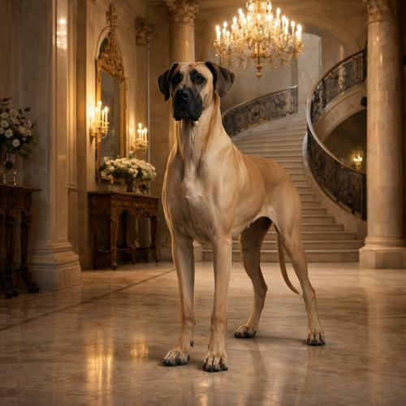
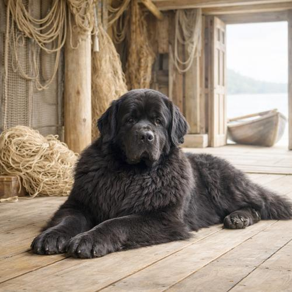
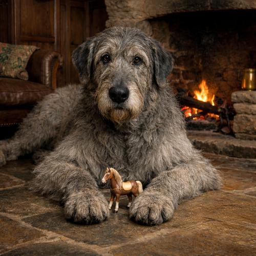

Riesenwuchs als Qualzucht
4 Folgen · 6 Stellen · 12 Min. zum NachhörenAlle Stellen im Podcast
Folge 229 · 1. Oktober 2025
Riesen, Hämorrhoiden & Essgeräusche
2 Stellen zu diesem Thema
Folge 228 · 25. September 2025
Verona, Veggie-Futter & Vorsorge
1 Stelle zu diesem Thema

Deutsche DoggeRasseportrait in Folge 229
NeufundländerRasseportrait in Folge 226
Irischer WolfshundErwähnt in Folge 229Stellen und Zusammenfassungen werden aus den Transkripten der Folgen erstellt und können Fehler enthalten. Stimmt etwas nicht? Schreib an rasseportrait@tobiaswinkler.berlin.